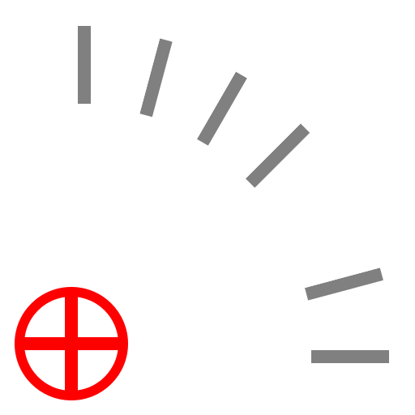

Linie von 2 Punkten
Werkzeugleiste / Symbol:

 Menü: Zeichnen - Linie - Linie von 2 Punkten
Tastenkürzel: L, I
Kommandos: line | ln | li | l
Menü: Zeichnen - Linie - Linie von 2 Punkten
Tastenkürzel: L, I
Kommandos: line | ln | li | l
Beschreibung:
Konstruktion von einer oder mehreren zusammenhängenden geraden Linien.
Vorgehensweise:
- Bestimmen Sie den Startpunkt des ersten Liniensegments mit der Maus oder
geben Sie eine Koordinate in die Kommandozeile ein.
- Bestimmen Sie den Endpunkt des ersten Liniensegments.
- Bestimmen Sie die Endpunkte aller zusätzlichen Liniensegmente. Klicken
Sie die 'Schliessen' Schaltfläche in der Optionenwerkzeugleiste, um die
Sequenz zu schliessen:

Um ein einzelnes Liniensegment zurückzunehmen, können sie die 'Zurück'
Schaltfläche klicken:

- Zusätzlich können Sie den Winkel oder die Länge der Linie einschränken
auf ein vielfaches eines vorgegebenen Winkels / einer vorgegebenen Länge.
